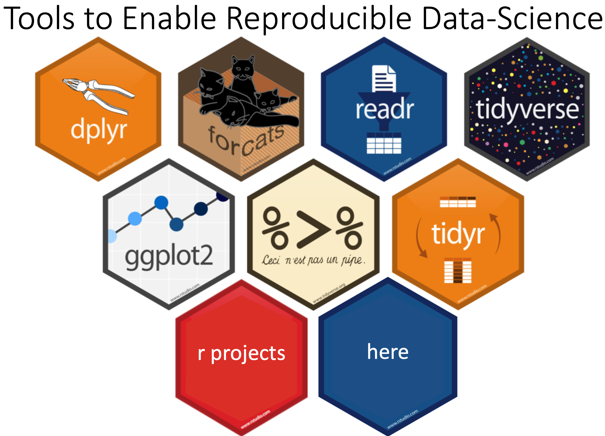

Chapter 4 Exploratory Factor Analysis (EFA)

DATA SOURCE: This lab exercise utilizes the NCES public-use dataset: Education Longitudinal Study of 2002 (Lauff & Ingels, 2014) \(\color{blue}{\text{See website: nces.ed.gov}}\)
4.1 Preparation
R-Project Instructions:
- click “NEW PROJECT” (upper right corner of window)
- choose option “NEW DIRECTORY”
- choose location of project (on desktop OR in a designated class folder)
Within R-studio under the Files pane (bottom right):
- click “New Folder” and name folder “data”
- click “New Folder” and name folder “efa_mplus”
4.2 Loading packages
library(MplusAutomation)
library(haven)
library(rhdf5)
library(tidyverse)
library(here)
library(corrplot)
library(kableExtra)4.3 EXERCISE 1: READ IN DATA TO R ENVIRONMENT
lab_data <- read_spss("https://garberadamc.github.io/project-site/data/els_sub1_spss.sav")4.4 EXERCISE 2: SUBSET
# make a subset of all the student reported variables
by_student <- lab_data %>%
select(22:145)
# make another subset (just the variables we will use for the EFA)
schl_safe <- lab_data %>%
select(
"BYS20A", "BYS20B", "BYS20C", "BYS20D", "BYS20E", "BYS20F", "BYS20G", # F1
"BYS20H", "BYS20I", "BYS20J", "BYS20K", "BYS20L", "BYS20M", "BYS20N", # F2
"BYS21A", "BYS21B", "BYS21C", "BYS21D", "BYS21E", # F3
"BYSEX", "BYRACE", "BYSTLANG" # add some covariates or grouping variables
)4.5 EXERCISE 4: REVERSE CODE
Reverse indicators so scale has consistent meaning for factor interpretation
Expected factors based on item wording:
- Factor 1: “school climate,” higher values indicate postive school climate
- Factor 2: “safety,” higher values indicate safe school conditions
- Factor 3: “clear rules,” higher values indicate clear communication of rules
# Reverse code the following variables:
cols = c("BYS20A", "BYS20B", "BYS20C", # FACTOR 1: school climate
"BYS20E", "BYS20F", "BYS20G",
"BYS21A", "BYS21B", "BYS21C", "BYS21D", "BYS21E") # FACTOR 3: clear rules
# the number "5" will change: Use "number of categories" + 1 (e.g., 4 + 1)
schl_safe[ ,cols] <- 5 - schl_safe[ ,cols] 4.6 EXERCISE 5: CHECK CORRELATIONS
4.6.1 check correlations to see if coding was correct (all blue, no red)
f1_cor <- cor(schl_safe[1:7], use = "pairwise.complete.obs")
f2_cor <- cor(schl_safe[8:14], use = "pairwise.complete.obs")
f3_cor <- cor(schl_safe[15:19], use = "pairwise.complete.obs")
corrplot(f1_cor, method = "circle", type = "upper")
corrplot(f2_cor, method = "circle", type = "upper")
corrplot(f3_cor, method = "circle", type = "upper")
# Discovering patterns in large correlation matrices: The correlation matrix can
# be reordered according to the correlation coefficient. This is useful for
# identifying the hidden structure and pattern in the matrix. “hclust” for
# hierarchical clustering can be used...
# Add the argument: order='hclust'4.7 EXERCISE 6: PREPARE DATASETS
### prepare datasets, remove SPSS labeling
# write a CSV datafile (preferable format for reading into R, without labels)
write_csv(schl_safe, here("data", "els_fa_ready_sub2.csv"))
# write a SPSS datafile (preferable format for reading into SPSS, labels are
# preserved)
write_sav(schl_safe, here("data", "els_fa_ready_sub2.sav"))
# read the unlabeled data back into R
fa_data <- read_csv(here("data", "els_fa_ready_sub2.csv"))
# write an Mplus DAT datafile
prepareMplusData(fa_data, here("data", "els_fa_ready_sub2.dat"))4.8 EXERCISE 7: MPLUS AUTOMATION - GET DESCRIPTIVES
## TYPE = BASIC ANALYSIS (indicators: school climate, safety, clear rules )
m_basic <- mplusObject(
TITLE = "RUN TYPE = BASIC ANALYSIS - LAB 2 DEMO",
VARIABLE =
" ! an mplusObject() will always need a 'usevar' statement
! ONLY specify variables to use in analysis
! lines of code in MPLUS ALWAYS end with a semicolon ';'
usevar =
BYS20A BYS20B BYS20C BYS20D BYS20E BYS20F BYS20G
BYS20H BYS20I BYS20J BYS20K BYS20L BYS20M BYS20N
BYS21A BYS21B BYS21C BYS21D BYS21E;",
ANALYSIS =
"type = basic" ,
MODEL = "" ,
PLOT = "",
OUTPUT = "",
usevariables = colnames(fa_data), # tell MplusAutomation the column names to use
rdata = fa_data) # this is the data object used (must be un-label)
m_basic_fit <- mplusModeler(m_basic,
dataout=here("efa_mplus", "basic_Lab2_DEMO.dat"),
modelout=here("efa_mplus", "basic_Lab2_DEMO.inp"),
check=TRUE, run = TRUE, hashfilename = FALSE)
## END: TYPE = BASIC ANALYSIS 4.9 EXERCISE 8: EXPLORATORY FACTOR ANALYSIS (EFA)
## EXPLORATORY FACTOR ANALYSIS: (indicators: school climate, safety, clear rules)
m_efa_1 <- mplusObject(
TITLE = "FACTOR ANALYSIS EFA - LAB 2 DEMO",
VARIABLE =
"usevar =
BYS20A BYS20B BYS20C BYS20D BYS20E BYS20F BYS20G
BYS20H BYS20I BYS20J BYS20K BYS20L BYS20M BYS20N
BYS21A BYS21B BYS21C BYS21D BYS21E;",
ANALYSIS =
"type = efa 1 5; ! run efa of 1 through 5 factor models
estimator = MLR; ! using the ROBUST ML Estimator
parallel=50; ! run the parallel analysis for viewing in elbow plotå
",
MODEL = "" ,
PLOT = "type = plot3;",
OUTPUT = "sampstat standardized residual modindices (3.84);",
usevariables = colnames(fa_data),
rdata = fa_data)
m_efa_1_fit <- mplusModeler(m_efa_1,
dataout=here("efa_mplus", "EFA1_Lab2_DEMO.dat"),
modelout=here("efa_mplus", "EFA1_Lab2_DEMO.inp"),
check=TRUE, run = TRUE, hashfilename = FALSE)
## END: EXPLORATORY FACTOR ANALYSIS4.9.1 EXERCISE 9: EFA REDUCED INDICATOR SET
4.9.2 Removed items: (loadings <.5 and/or cross-loadings)
4.9.2.1 How to make a tribble table?
lab_tools <- tribble(
~"Items", ~"Factor 1", ~"Factor 2", ~"Factor 3",
#----------|-------------|------------|-----------|,
"BYS20C" , " 0.149 " , "0.168*" , "0.120 " ,
"BYS20D" , " 0.075 " , "0.338*" , "0.082 " ,
"BYS20H" , " 0.345*" , "0.307*" , "0.061 " ,
"BYS20I" , "-0.032 " , "0.386*" , "0.167 " ,
"BYS20L" , " 0.004 " , "0.400*" , "0.377*" ,
"BYS21B" , " 0.418*" , "0.024 " , "0.187*" ,
)
lab_tools %>%
kable(booktabs = T, linesep = "") %>%
kable_styling(latex_options = c("striped"),
full_width = F,
position = "left")| Items | Factor 1 | Factor 2 | Factor 3 |
|---|---|---|---|
| BYS20C | 0.149 | 0.168* | 0.120 |
| BYS20D | 0.075 | 0.338* | 0.082 |
| BYS20H | 0.345* | 0.307* | 0.061 |
| BYS20I | -0.032 | 0.386* | 0.167 |
| BYS20L | 0.004 | 0.400* | 0.377* |
| BYS21B | 0.418* | 0.024 | 0.187* |
## EXPLORATORY FACTOR ANALYSIS - REDUCED SET
m.step1 <- mplusObject(
TITLE = "FACTOR ANALYSIS EFA - REDUCED SET - LAB 2 DEMO",
VARIABLE =
"usevar =
BYS20A BYS20B BYS20E BYS20F BYS20G
! removed: BYS20C BYS20D
BYS20J BYS20K BYS20M BYS20N
! removed:BYS20H BYS20I BYS20L
BYS21A BYS21C BYS21D BYS21E
! removed: BYS21B
;",
ANALYSIS =
"type = efa 1 5; ! run efa of 1 through 5 factor models
estimator = MLR; ! using the ROBUST ML Estimator
parallel=50; ! run the parallel analysis for viewing in elbow plot
",
MODEL = "" ,
PLOT = "type = plot3;",
OUTPUT = "sampstat standardized residual modindices (3.84);",
usevariables = colnames(fa_data),
rdata = fa_data)
m.step1.fit <- mplusModeler(m.step1,
dataout=here("efa_mplus", "EFA2_Lab1_DEMO.dat"),
modelout=here("efa_mplus", "EFA2_Lab1_DEMO.inp"),
check=TRUE, run = TRUE, hashfilename = FALSE)
## END: EXPLORATORY FACTOR ANALYSIS OF - REDUCED SET4.10 References
Hallquist, M. N., & Wiley, J. F. (2018). MplusAutomation: An R Package for Facilitating Large-Scale Latent Variable Analyses in Mplus. Structural equation modeling: a multidisciplinary journal, 25(4), 621-638.
Horst, A. (2020). Course & Workshop Materials. GitHub Repositories, https://https://allisonhorst.github.io/
Muthén, L.K. and Muthén, B.O. (1998-2017). Mplus User’s Guide. Eighth Edition. Los Angeles, CA: Muthén & Muthén
R Core Team (2017). R: A language and environment for statistical computing. R Foundation for Statistical Computing, Vienna, Austria. URL http://www.R-project.org/
Wickham et al., (2019). Welcome to the tidyverse. Journal of Open Source Software, 4(43), 1686, https://doi.org/10.21105/joss.01686